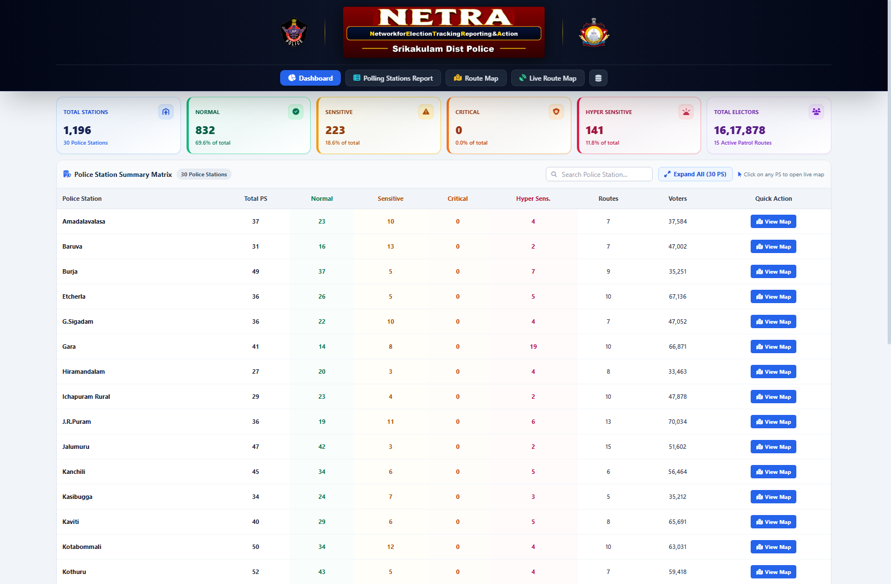
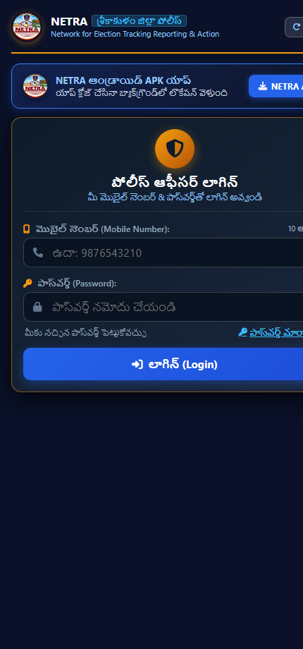
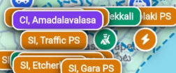

NETRA - ఎన్నికల భద్రత & లైవ్ ట్రాకింగ్ సిస్టమ్
Network for Election Tracking Reporting & Action — సంక్షిప్త సమాచార పత్రం (Short Brief Note)
1. వ్యవస్థ పరిచయం & ఉద్దేశం (Introduction & Core Vision)
గ్రామ పంచాయతీ ఎన్నికలను అత్యంత పారదర్శకంగా, శాంతియుతంగా మరియు ప్రశాంత వాతావరణంలో నిర్వహించడానికి శ్రీకాకుళం జిల్లా పోలీస్ ఆధ్వర్యంలో రూపొందించబడిన వినూత్న సాంకేతిక వేదిక NETRA (Network for Election Tracking Reporting & Action). జిల్లాలోని 30 మండలాల్లో విధులు నిర్వర్తించే అన్ని రకాల పోలీస్ బలగాలను (రూట్ మొబైల్స్, స్ట్రైకింగ్ ఫోర్స్, స్పెషల్ స్ట్రైకింగ్ ఫోర్స్, QRTలు) ఒకే గొడుగు కిందకు తెచ్చి, వారి కదలికలను జీపీఎస్ (GPS) ద్వారా రియల్-టైమ్లో పర్యవేక్షించడం దీని ముఖ్య ఉద్దేశం.
🌐 కంట్రోల్ రూమ్ వెబ్ పోర్టల్
లింక్: https://election-maps.github.io/Municipal-GP/
జిల్లా ఎస్పీ, జిల్లా ఎన్నికల సెల్, కంట్రోల్ రూమ్ సిబ్బంది మరియు సూపర్వైజరీ అధికారులు జిల్లాలోని మొత్తం 30 మండలాల పోలింగ్ కేంద్రాలు మరియు లైవ్ ఫోర్స్ కదలికలను పెద్ద స్క్రీన్పై పర్యవేక్షించే అధికారిక డాష్బోర్డ్.
📱 NETRA ఆఫీసర్ మొబైల్ APK
ఉద్దేశం: క్షేత్రస్థాయి అధికారుల లైవ్ లొకేషన్ ప్రసారం
క్షేత్రస్థాయిలో పెట్రోలింగ్ మరియు స్ట్రైకింగ్ డ్యూటీలు చేసే ఎస్సైలు, సీఐలు, డ్రైవర్లు తమ మొబైల్ ఫోన్ ద్వారా ఒకే ఒక్క క్లిక్తో లైవ్ జీపీఎస్ లొకేషన్ను కంట్రోల్ రూమ్కు మరియు తమ సర్కిల్ / డివిజన్ అధికారులకు చేరవేసే తేలికపాటి యాప్.
2. ఈ వ్యవస్థ ఎన్నికలకు ఏ విధంగా ఉపయోగపడుతుంది? (Strategic Benefits for Elections)
- తక్షణ స్పందన (Zero Delay Quick Response - 3 to 5 Minutes): ఏదైనా సమస్యాత్మక పోలింగ్ కేంద్రం వద్ద ఘర్షణ లేదా అవాంఛనీయ సంఘటన జరిగినప్పుడు, ఆ పోలింగ్ బూత్కు ఏ పోలీస్ పార్టీ (SF/SSF/RM) అతి దగ్గరలో ఉందో కంట్రోల్ రూమ్ స్క్రీన్పై క్షణాల్లో తెలుస్తుంది. తద్వారా 3 నుండి 5 నిమిషాల్లో అదనపు బలగాలు ఘటనా స్థలానికి చేరుకుంటాయి.
- పారదర్శకత మరియు పెట్రోలింగ్ జవాబుదారీతనం (Accountability & Coverage): ఎన్నికల రోజున ప్రతి రూట్ మొబైల్ నిర్దేశిత గ్రామాలు మరియు పోలింగ్ కేంద్రాలలో నిరంతరం తిరుగుతోందా లేదా అనేది లైవ్ స్పీడ్ (km/h) మరియు కిలోమీటర్లతో సహా రికార్డవుతుంది.
- సమస్యాత్మక కేంద్రాలపై ప్రత్యేక దృష్టి (Focused Critical Polling Stations): హైపర్సెన్సిటివ్, సెన్సిటివ్ పోలింగ్ కేంద్రాలు మ్యాప్లో ప్రత్యేక రంగులతో విభజించబడి ఉంటాయి. ఆ కేంద్రాల సమీపంలో స్ట్రైకింగ్ బలగాల ఉనికిని ఎప్పటికప్పుడు నిర్ధారించుకోవచ్చు.
- అత్యవసర SOS అలర్ట్ సౌలభ్యం: పోలింగ్ బూత్ వద్ద తీవ్ర ఉద్రిక్తత ఏర్పడితే, ఆఫీసర్ యాప్లోని "SOS బటన్" నొక్కగానే కంట్రోల్ రూమ్ మరియు సమీపంలోని అన్ని మొబైల్స్కు శబ్దంతో కూడిన అత్యవసర అలర్ట్ వెళ్తుంది.
🎯 నినాదం: "Track Every Move, Respond to Every Issue, Ensure Successful & Peaceful Elections."
3. వెబ్ పోర్టల్ ఉపయోగించే విధానం & ముఖ్య ఫీచర్లు (Web Portal Functions)
కంట్రోల్ రూమ్ వెబ్ పోర్టల్ కంప్యూటర్ లేదా ల్యాప్టాప్ బ్రౌజర్లో ఎటువంటి ఇన్స్టాలేషన్ అవసరం లేకుండా నేరుగా పనిచేస్తుంది. పోర్టల్లో ప్రధానంగా క్రింది విభాగాలు ఉన్నాయి:
- జిల్లా సమగ్ర మ్యాప్ (District Polling Map): 30 మండలాల్లోని అన్ని పంచాయతీలు, పోలింగ్ కేంద్రాలు, సమస్యాత్మక లొకేషన్లు స్పష్టమైన పిన్లతో కనిపిస్తాయి.
- లైవ్ రూట్ మ్యాప్ (Live Route Map Tab): డ్యూటీలో ఉన్న ఫోర్సెస్ ప్రత్యక్ష కదలికలను నిరంతరం రిఫ్రెష్ చేస్తూ చూపిస్తుంది.
- వన్-క్లిక్ ఫోన్ కాల్ & నావిగేషన్: మ్యాప్లోని ఏ అధికారి మార్కర్పై క్లిక్ చేసినా వారి మొబైల్ నంబర్, వాహన వేగం, డ్యూటీ వివరాలు కనిపించి వెంటనే కాల్ చేయవచ్చు లేదా గూగుల్ మ్యాప్స్ రూట్ పొందవచ్చు.
- ఎమర్జెన్సీ SOS డాష్బోర్డ్: ఫీల్డ్ నుండి వచ్చే అత్యవసర సందేశాలను ఎరుపు రంగులో హైలైట్ చేసి పోలీస్ బాధ్యులకు అలర్ట్ చేస్తుంది.
- ఎక్సెల్ రిపోర్ట్ జనరేషన్: ప్రస్తుతం లైవ్లో ఉన్న అధికారులు మరియు ఆఫ్లైన్లో ఉన్న అధికారుల జాబితాను ఒకే క్లిక్తో ఎక్సెల్ ఫైల్ రూపంలో ఎగుమతి (Export) చేయవచ్చు.
- రూట్ వారీ ఫిల్టర్లు: నిర్దిష్ట పోలీస్ స్టేషన్ లేదా నిర్దిష్ట రూట్ నంబర్ను మాత్రమే ఫిల్టర్ చేసి పరిశీలించవచ్చు.

చిత్రం 1: కంట్రోల్ రూమ్ వెబ్ పోర్టల్ ఇంటర్ఫేస్ — ఎన్నికల మ్యాప్, రియల్-టైమ్ మానిటరింగ్ మరియు రూట్ అనలిటిక్స్
💡 కంట్రోల్ రూమ్ ఉపయోగం: ఎన్నికల రోజున జిల్లా కంట్రోల్ రూమ్లో ఉన్న అధికారులు పెద్ద స్క్రీన్లపై ఈ పోర్టల్ను డిస్ప్లే ఉంచి, జిల్లా వ్యాప్తంగా శాంతిభద్రతలను పర్యవేక్షిస్తారు.
4. NETRA మొబైల్ APK ఎలా ఉపయోగించాలి? (Mobile App User Guide)
క్షేత్రస్థాయిలో విధులు నిర్వహించే అధికారులు తమ ఆండ్రాయిడ్ మొబైల్లో NETRA APK ని ఇన్స్టాల్ చేసుకుని క్రింది సులభమైన దశల ద్వారా ఉపయోగించవచ్చు:
దశ 1: సులభ లాగిన్
అధికారి తమ అధికారిక మొబైల్ నంబర్ మరియు పాస్వర్డ్ నమోదు చేసి లాగిన్ అవ్వాలి.
దశ 2: లైవ్ లొకేషన్ ప్రారంభం
లాగిన్ అయిన వెంటనే "లైవ్ లొకేషన్ ప్రారంభించండి" అనే బటన్ నొక్కగానే జీపీఎస్ కనెక్ట్ అయి లొకేషన్ షేరింగ్ ప్రారంభమవుతుంది.
దశ 3: హోమ్ బటన్ సౌలభ్యం
లొకేషన్ ప్రారంభమైన తర్వాత మొబైల్ HOME బటన్ నొక్కి వాట్సాప్ లేదా ఇతర ఫోన్ పనులు చేసుకోవచ్చు. బ్రౌజర్ బ్యాక్గ్రౌండ్లో ఉన్నా లొకేషన్ నిరంతరం ప్రసారమవుతుంది.
దశ 4: అత్యవసర SOS అలర్ట్
ఏదైనా ఆపద లేదా గొడవ జరిగినప్పుడు రెడ్ కలర్ "🚨 అత్యవసర SOS అలర్ట్" బటన్ నొక్కితే కంట్రోల్ రూమ్కు తక్షణ హెచ్చరిక వెళ్తుంది.
మార్కర్ లేబుల్ (2-Tier Marker Pill):
మ్యాప్పై అధికారుల మార్కర్ల వద్ద పై వరుసలో ఫోర్స్ విభాగం పేరు (ఉదా: SF-1 (Srikurmam)), క్రింది వరుసలో నలుపు బోల్డ్ ఫాంట్లో హోదా & పోలీస్ స్టేషన్ (ఉదా: SI, Gara PS) స్పష్టంగా కనిపిస్తాయి.
5. సూపర్వైజరీ అధికారులు (3 SDPOలు + 12 CIలు) స్పెషల్ మానిటరింగ్
సూపర్వైజరీ అధికారులు తమ మొబైల్ నంబర్లతో లాగిన్ అయినప్పుడు, వారి పరిధిలోని మండలాల అధికారులు ఎవరైతే లైవ్ లొకేషన్ షేర్ చేస్తున్నారో వారి లొకేషన్లు మాత్రమే వారి మ్యాప్లో ఆటోమేటిక్గా కనిపిస్తాయి:
| హోదా |
లాగిన్ నంబర్ |
మ్యాప్లో కనిపించే పరిధిలోని మండలాలు |
| SDPO శ్రీకాకుళం |
6309990804 |
శ్రీకాకుళం, ఆమదాలవలస, బూర్జ, ఎచ్చెర్ల, జి.సిగడాం, గార, రణస్థలం, లావేరు, పొందూరు, సరుబుజ్జిలి, ఎల్.ఎన్.పేట (11 మండలాలు) |
| SDPO టెక్కలి |
6309990811 |
టెక్కలి, కోటబొమ్మాళి, సంతబొమ్మాళి, హిరమండలం, జలుమూరు, కొత్తూరు, మెళియాపుట్టి, నందిగాం, నరసన్నపేట, పాతపట్నం, పోలాకి, సారవకోట (12 మండలాలు) |
| SDPO కాశీబుగ్గ |
6309990805 |
కాశీబుగ్గ (పలాస), ఇచ్ఛాపురం రూరల్, కంచిలి, కవిటి, మందస, సోంపేట, వజ్రపుకొత్తూరు (7 మండలాలు) |
| 12 సర్కిల్ ఇన్స్పెక్టర్లు |
6309990814 - 6309990828 |
ఆయా సర్కిల్ పరిధిలోని నిర్దిష్ట మండలాలు (ఉదా: CI ఆమదాలవలస, CI రూరల్, CI జేఆర్ పురం, CI టెక్కలి, CI కొత్తూరు మొదలైనవి) |

చిత్రం 2: NETRA ఆఫీసర్ లాగిన్ & ట్రాకింగ్ స్క్రీన్

చిత్రం 3: లైవ్ మ్యాప్లో 2-Tier మార్కర్ పిన్స్ (SF/SSF & Rank/PS)
6. సాంప్రదాయ ఎన్నికల పర్యవేక్షణ vs NETRA ఆధునిక పర్యవేక్షణ
| అంశం |
గత సాంప్రదాయ పద్ధతి |
NETRA డిజిటల్ సిస్టమ్ ద్వారా |
| పోలీస్ పార్టీ లొకేషన్ |
వైర్లెస్ / ఫోన్ కాల్ ద్వారా మాత్రమే అడిగి తెలుసుకోవాలి. |
మ్యాప్పై నిరంతరం ప్రత్యక్షంగా (Live GPS) కనిపిస్తుంది. |
| ఘటనా స్థలానికి చేరే సమయం |
ఎవరు ఎక్కడున్నారో స్పష్టత లేక 20 నుండి 30 నిమిషాలు పట్టేది. |
సమీప పార్టీ వెంటనే గుర్తించబడి 3-5 నిమిషాల్లో చేరుకుంటుంది. |
| రూట్ పర్యవేక్షణ |
అధికారులు పూర్తి రూట్ తిరిగారా లేదా అనేది ధృవీకరణ కష్టం. |
తిరిగిన కిలోమీటర్లు, వేగం మరియు కదలికలు నమోదవుతాయి. |
| అత్యవసర సమాచారం |
ఫోన్ నెట్వర్క్ బిజీ ఉంటే కంట్రోల్ రూమ్కు చేరడం ఆలస్యం. |
ఒకే టచ్తో SOS అలర్ట్ నేరుగా కంట్రోల్ రూమ్ స్క్రీన్పై మోగుతుంది. |
7. సమగ్ర కార్యాచరణ సారాంశం (System Architecture Snapshot)
| సిస్టమ్ పేరు: |
NETRA (Network for Election Tracking Reporting & Action) |
| కంట్రోల్ రూమ్ పోర్టల్: |
https://election-maps.github.io/Municipal-GP/ |
| ఫీల్డ్ ఆఫీసర్ APK: |
NETRA.apk (ఆండ్రాయిడ్ యాప్ - బ్యాక్గ్రౌండ్ జీపీఎస్ ట్రాకర్) |
| పరిధి: |
శ్రీకాకుళం జిల్లాలోని మొత్తం 30 మండలాలు, అన్ని గ్రామ పంచాయతీలు |
| ట్రాకింగ్ అయ్యే విభాగాలు: |
Route Mobiles
Striking Force
Special Striking Force
QRTs
|
| సూపర్వైజరీ యాక్సెస్: |
3 SDPOలు, 12 సర్కిల్ ఇన్స్పెక్టర్లు మరియు జిల్లా ఎస్పీ ప్రత్యేక డాష్బోర్డ్స్ |
8. ముగింపు (Conclusion)
ఆధునిక సాంకేతిక పరిజ్ఞానాన్ని పోలీసింగ్ మరియు ఎన్నికల విధులకు అనుసంధానించడం ద్వారా రూపొందించబడిన NETRA ప్రాజెక్ట్, ఎన్నికల బందోబస్తులో మానవ వనరుల సమర్థవంతమైన నిర్వహణకు, శాంతిభద్రతల పరిరక్షణకు మరియు సత్వర అత్యవసర స్పందనకు అత్యంత కీలకమైన ఆయుధంగా నిలుస్తుంది. జిల్లా ఎన్నికల కంట్రోల్ రూమ్ మరియు ఫీల్డ్ ఫోర్స్ మధ్య నిరంతర రియల్-టైమ్ కమ్యూనికేషన్ నెలకొల్పడం ద్వారా శ్రీకాకుళం జిల్లాలో గ్రామ పంచాయతీ ఎన్నికలను విజయవంతంగా, నిష్పాక్షికంగా నిర్వహించడంలో NETRA అత్యుత్తమ సేవలందిస్తుంది.
తేదీ: 21 నవంబర్ 2026
శ్రీకాకుళం, ఆంధ్రప్రదేశ్
పోలీస్ సూపరింటెండెంట్ కార్యాలయం
శ్రీకాకుళం జిల్లా పోలీస్ శాఖ